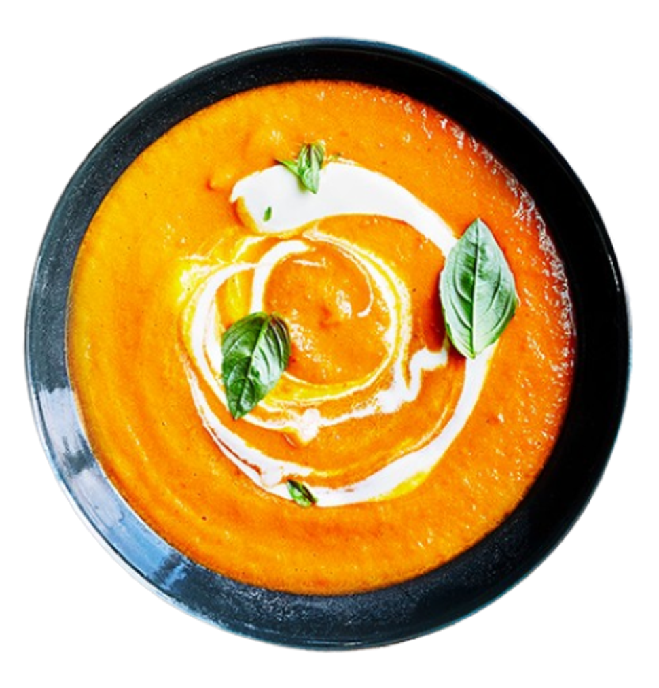

French Onion Soup


1We have been trying French onion soup in restaurants for years and my
family and friends agree none can compare to my recipe for taste and
simplicity of preparation.

Ingredients
-1/2 cup unsalted butter -2 tablespoons olive oil
4 cups sliced onions-(10. ounce) cans beef broth -2 tablespoons dry sherry (optional)
-1 teaspoon dried thyme salt and pepper to taste -4 slices French bread
-4 slices provolone cheese -2 slices Swiss cheese diced,
-1/4
cup grated Parmesan cheeseh

Directions
- 1)Melt butter with olive oil in an 8 quart stock pot on medium
heat.Add onions and continually stir until tender and translucent. Do not
brown the onions.
- 2)Add beef broth, sherry and thyme. Season with salt and
pepper, and simmer for 30 minutes.
- 3)Heat the oven broiler.
- 4)Ladle soup into
oven safe serving bowls and place one slice of bread on top of each (bread
may be broken into pieces if you prefer). Layer each slice of bread with a
slice of provolone, 1/2 slice diced Swiss and 1 tablespoon Parmesan cheese.
Place bowls on cookie sheet and broil in the preheated oven until cheese
bubbles and browns slightly.